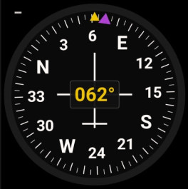
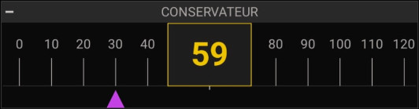

🧭
Conservateur de cap
Direction suivie · cap à suivre (bug magenta)
ANLCAP · analogique
NUMCAP · numérique (100%-1L)


Possibilités
- Affiche le cap courant (magnétique ou route GPS, selon Réglages).
- Cap à suivre matérialisé par un curseur / bug magenta.
- Version numérique : bande défilante + valeur en gros dans une cellule orange.
Gestes
– Appui long : saisir le cap à suivre
·· Double-tap : —
Réglages liés
- Source du cap : magnétique / route GPS (onglet Cockpits).